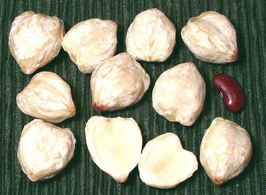

Candlenut

[Kukui nut (Hawaii); Indian Walnut; Buah keras (Malay); Kemiri
(Indonesia); Lumbang (Philippine); Aleurites moluccana]
Nuts of a tree native to Southeast Asia, and spread by humans to the
extent its true origin can not be determined. Polynesian settlers brought
it to Hawaii where it became very important - the nuts for food and the
rest of the tree for wood, dye, tanning chemicals, medicines and flowers
for leis. Unshelled nuts take a gem-like polish and are used to make bead
necklaces. As Kukui, it is the state tree of Hawaii.
Candlenuts are mildly toxic raw and sometimes used as a purgative.
Shelled nuts are a bit larger than shelled macadamia nuts and have a
softer, lumpier appearance. The largest photo specimen was 1 inch long,
7/8 inch across and 5/8 inch thick, typically 10 to the ounce. While
shelled Macadamia nuts (completely unrelated) are often used as a
substitute, the flavor is considerably different, though the oil content
is similar. Raw Brazil nuts are a superior substitute, but are not
always available. As a nut, the macadamia is quite superior.
Today candlenuts are most noted for use as a thickener in the cuisines
of Malaysia, Indonesia and surrounding regions. They are available in
some Asian markets but should be purchased with caution and used soon
as they go rancid rather quickly. Commercially they are most used for
production of oil (nuts are 15% to 20% oil) for use in skin care
products, but most of the oil is used locally rather than exported.
More on Spurges
Buying:
These can be found in Asian markets serving a
Malaysian or Indonesian community. Often large Asian markets have a
small area for Indonesian specialties. Take care when buying them as they
may be starting to go rancid by time they're on the shelf.
Update 2016: Candlenutes are now appearing in heavy vacuum pack
bags to protect them from rancidity. If you won't use them right away,
freeze left-over ones.
Substitutes:
The preferred substitute is raw Brazil
nuts (about 1/3 per candlenut), but these may not be readily available
in North America, most being roasted. Raw macadamia nuts (1.5 macadamias
per candlenut), are a reasonable substitute, but these are not highly
available either. Third preference is raw Cashews (1.75 cashews per
candlenut). Fourth is blanched almonds (3 almonds per candlenut).
Cooking:
Candlenuts are pounded to paste before including
in recipes, since their main purpose is to act as a thickener. They are
always put in when there will still be a fair amount of cooking time, both
to develop their thickening properties and to destroy toxins.
sr_candlez 110112 www.clovegarden.com
© Andrew Grygus - agryg@clovegarden.com - Photos on
this page not otherwise credited are ©
cg1.- Linking to and non-commercial use of
this page permitted.